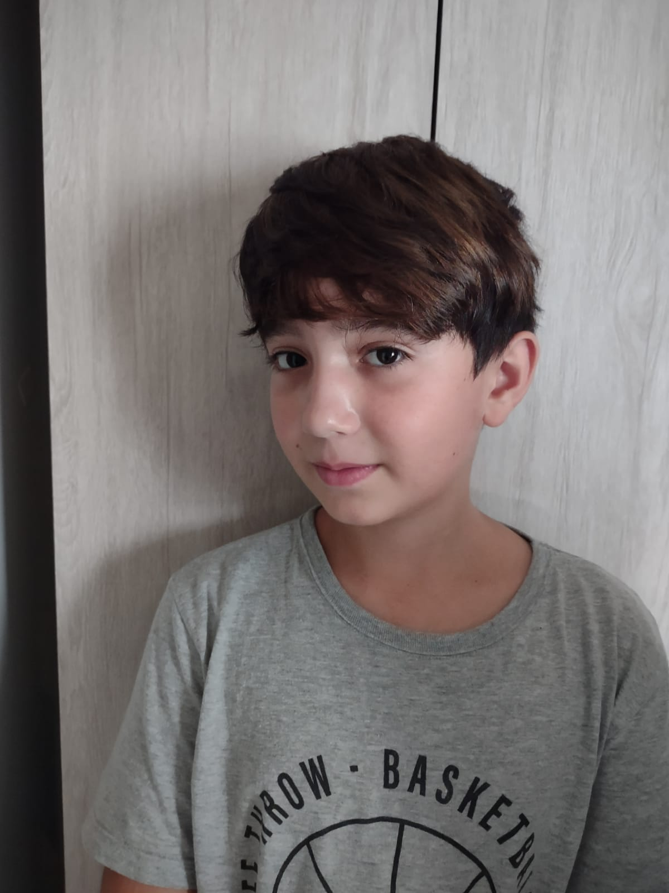

Lugares que você tem que conhecer

Ocean Palace
visitei em set de 2022
O Ocean Palace é um Resort em Natal - Rio Grande do Norte que tem muitas coisas como: Restaurante, Pizzaria, Piscinas, Espaço Kids e o mais legal que tem uma praia perto do resort, de manhã temos o café da manhã que é surreal de bom! o almoço temos até sobremesas! e o mais legal de noite temos pizza doce, de calabresa, de carne e etc. Lá temos atividades para as crianças como caçador e futebol, no Ocean Palace também tem uma sala de jogos com uma mesa de ping pong, Ps4, Xbox, mesa de sinuca, uno e e entre outros jogos que tem na sala de jogos fiquei uma semana lá e foi o melhor lugar que ja fui
Crítica de Filmes
Filme exclente para quem gosta do anime My Hero Academia
Assiti a uns dias atrás, não faz parte da cronologia do anime, mas é um pedaço com muita emoção e luta O Filme é da historia de um garoto que faz parte de um mundo que todos tem poderes, mas esse menino nasceu sem esses poderes. ele acha seu heroi idolo e fala que nasceu sem poder, e o heroi famoso decide dar seu poder pra ele. desde então ele estuda numa escola de herois jovens com um bom potencial para ser o heroi numero 1. ele decide ir treinar com sua turma numa ilha pacifica, mas de repente 4 vilões aparecem, um dos vilões é derrotado por 3 alunos e se preparam no outro dia com um plano para derrotar os 3 ultimos vilões, 7 alunos cuidaram do vilão mais forte, 5 alunos cuidaram do 2 mais forte e os 2 ultimos alunos cuidaram da vilã mais fraca. eles derrotam os 2 vilões e o ultimo foi o vilão mais forte, todos estão feridos mas os 2 ultimos alunos juntaram seus poderes no maximo e conseguem derrotar o vilão com um ataque surreal.
Lista de Livros

